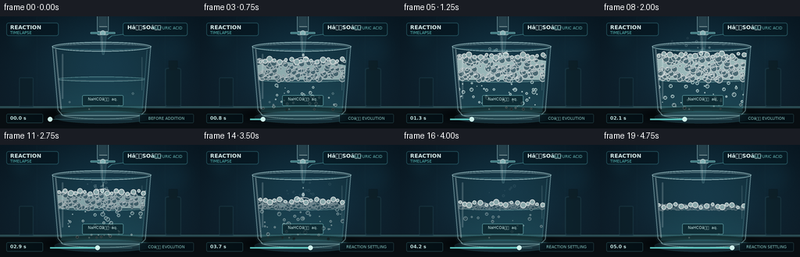
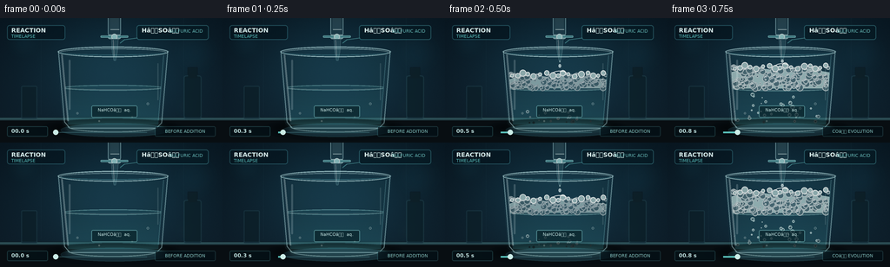

CODING AGENTS AS PIXEL WORLD MODELS
traex/GPT-5.6-Sol · material_0036
点击播放 · 原生 RGB 像素
逐轮保存的候选
回放视频、检查图与代码变化。
每份候选均可单独播放。实际图片检查记录在下方工具轨迹中。
候选 01播放与检查图
点击播放 · 原生 RGB 像素
展开代码变化
--- 上一保存版本
+++ 本次保存版本
@@ -0,0 +1,282 @@
+from pathlib import Path
+import json, math
+import numpy as np
+from PIL import Image, ImageDraw, ImageFont, ImageFilter, ImageChops
+import artifact_io
+
+ROOT = Path(__file__).resolve().parent
+SPEC = json.loads((ROOT / "task_spec.json").read_text())
+W, H, N = SPEC["width"], SPEC["height"], SPEC["frames"]
+S = 4
+w, h = W*S, H*S
+rng = np.random.default_rng(41027)
+
+# Fixed deterministic particle populations, so every run is reproducible.
+bubble_specs = []
+for _ in range(215):
+ birth = rng.uniform(.055, .79)
+ life = rng.uniform(.105, .29)
+ x = rng.uniform(76, 183)
+ rad = rng.uniform(.65, 3.0) * (1.3 if rng.random() < .11 else 1.0)
+ speed = rng.uniform(36, 72)
+ phase = rng.uniform(0, 2*math.pi)
+ bubble_specs.append((birth, life, x, rad, speed, phase))
+
+foam_specs = []
+for _ in range(150):
+ foam_specs.append((rng.uniform(0,1), rng.uniform(0,1), rng.uniform(1.0,4.2), rng.uniform(0,2*math.pi)))
+
+spray_specs = []
+for _ in range(38):
+ spray_specs.append((rng.uniform(.18,.74), rng.uniform(0,1), rng.uniform(-1,1), rng.uniform(.5,1.8), rng.uniform(0,2*math.pi)))
+
+# Fonts
+font_path = "/usr/share/fonts/truetype/dejavu/DejaVuSans.ttf"
+font_bold_path = "/usr/share/fonts/truetype/dejavu/DejaVuSans-Bold.ttf"
+def font(size, bold=False):
+ try:
+ return ImageFont.truetype(font_bold_path if bold else font_path, size*S)
+ except Exception:
+ return ImageFont.load_default()
+
+F_TITLE = font(7, True); F_TINY = font(5); F_FORMULA = font(7, True); F_TIME = font(6, True)
+
+def B(box): return tuple(int(round(v*S)) for v in box)
+def P(points): return [(int(round(x*S)), int(round(y*S))) for x,y in points]
+def layer(): return Image.new("RGBA", (w,h), (0,0,0,0))
+
+def reaction_activity(t):
+ if t < .06: return 0.0
+ rise = 1.0 - math.exp(-(t-.06)*15.0)
+ decay = math.exp(-max(0.0, t-.49)*5.1)
+ return min(1.0, rise*decay)
+
+def background():
+ yy, xx = np.mgrid[0:h, 0:w]
+ # Cool cinematic laboratory wall with a central pool of illumination.
+ radial = np.exp(-(((xx-w*.52)/(w*.53))**2 + ((yy-h*.42)/(h*.68))**2)*1.7)
+ top = yy / h
+ arr = np.zeros((h,w,3), dtype=np.float32)
+ arr[...,0] = 7 + 9*radial + 6*top
+ arr[...,1] = 19 + 28*radial + 8*top
+ arr[...,2] = 28 + 34*radial + 10*top
+ # subtle fixed film/lab-wall grain
+ grain_rng = np.random.default_rng(81)
+ grain = grain_rng.normal(0, .9, (h,w,1))
+ arr += grain
+ return Image.fromarray(np.clip(arr,0,255).astype(np.uint8), "RGB").convert("RGBA")
+
+BASE = background()
+# stationary, defocused laboratory lights
+bokeh = layer(); bd = ImageDraw.Draw(bokeh)
+for x,y,r,col in [(27,28,17,(35,121,143,30)),(224,40,25,(35,114,140,18)),(214,103,13,(73,171,181,16)),(39,87,9,(129,215,208,11))]:
+ bd.ellipse(B((x-r,y-r,x+r,y+r)), fill=col)
+bokeh = bokeh.filter(ImageFilter.GaussianBlur(10*S))
+BASE = Image.alpha_composite(BASE,bokeh)
+
+# background bench and stationary set dressing
+fixed = layer(); d = ImageDraw.Draw(fixed)
+# vertical panel seams
+for x in (47, 211): d.line(P([(x,0),(x,112)]), fill=(102,174,186,10), width=S)
+# bench edge and surface
+d.rectangle(B((0,115,256,144)), fill=(8,14,18,255))
+d.rectangle(B((0,115,256,118)), fill=(39,69,75,210))
+d.line(P([(0,116),(256,116)]), fill=(117,192,191,55), width=S)
+# horizontal reflected pool
+d.ellipse(B((42,116,216,142)), fill=(5,10,13,220))
+d.ellipse(B((70,122,194,137)), fill=(84,170,174,17))
+# blurred distant bottles / lab forms, kept unobtrusive
+d.rounded_rectangle(B((211,66,232,116)), radius=3*S, fill=(11,31,39,170), outline=(75,134,143,30), width=S)
+d.rectangle(B((216,57,227,69)), fill=(12,29,36,190))
+d.rounded_rectangle(B((24,78,43,116)), radius=2*S, fill=(11,30,38,160), outline=(72,136,147,25), width=S)
+fixed = fixed.filter(ImageFilter.GaussianBlur(.35*S))
+BASE = Image.alpha_composite(BASE, fixed)
+
+
+def render(fi):
+ t = fi/(N-1)
+ a = reaction_activity(t)
+ im = BASE.copy()
+
+ # Ground shadows/reflections react subtly to the brighter foam.
+ sh = layer(); sd=ImageDraw.Draw(sh)
+ sd.ellipse(B((54,119,205,135)), fill=(0,0,0,155))
+ sd.ellipse(B((77,123,187,131)), fill=(126,221,219,int(10+21*a)))
+ sh=sh.filter(ImageFilter.GaussianBlur(4*S)); im=Image.alpha_composite(im,sh)
+
+ # Beaker rear wall.
+ rear=layer(); rd=ImageDraw.Draw(rear)
+ rd.polygon(P([(66,38),(194,38),(187,122),(181,128),(79,128),(72,122)]), fill=(102,194,204,13))
+ rd.ellipse(B((66,32.5,194,45)), fill=(83,168,181,15), outline=(176,228,231,80), width=S)
+ # back rim seen through glass
+ rd.arc(B((69,35,191,44)), 180, 360, fill=(209,246,246,110), width=S)
+ im=Image.alpha_composite(im,rear)
+
+ # Interior clipping mask (tapered beaker body).
+ mask=Image.new("L",(w,h),0); md=ImageDraw.Draw(mask)
+ md.polygon(P([(72,40),(188,40),(182,123),(78,123)]),fill=255)
+
+ content=layer(); cd=ImageDraw.Draw(content)
+ liquid_y = 80.5 + 1.0*a
+ # clear solution, denser near the bottom
+ cd.polygon(P([(72,liquid_y),(188,liquid_y),(182,123),(78,123)]), fill=(71,183,194,45))
+ for yy in range(int(liquid_y*S), int(124*S)):
+ f=(yy/S-liquid_y)/(124-liquid_y)
+ cd.line([(70*S,yy),(190*S,yy)], fill=(64,174,186,int(12+34*f)), width=1)
+ # liquid meniscus
+ cd.ellipse(B((72,liquid_y-3.3,188,liquid_y+3.3)), fill=(72,183,190,23), outline=(161,235,232,100), width=S)
+ cd.arc(B((75,liquid_y-2.4,185,liquid_y+2.6)), 0,180, fill=(228,255,250,60), width=S)
+
+ # Rising CO2 bubbles in solution. Their positions are temporally coherent.
+ for birth,life,bx,rad,speed,phase in bubble_specs:
+ age=(t-birth)/life
+ if age < 0 or age > 1: continue
+ # births are concentrated low in the glass and accelerate upward
+ by=121 - speed*age - 5*age*age
+ bx2=bx + math.sin(phase+age*7.5)*1.8
+ if by < liquid_y-1: continue
+ fade=min(1,age*6,(1-age)*7)
+ alpha=int((80+95*a)*max(0,fade))
+ rr=rad*(.72+.38*age)
+ cd.ellipse(B((bx2-rr,by-rr,bx2+rr,by+rr)), fill=(189,246,241,max(10,alpha//5)), outline=(229,255,251,alpha), width=max(S, int(.65*S)))
+ cd.ellipse(B((bx2-rr*.35,by-rr*.52,bx2+rr*.02,by-rr*.15)), fill=(255,255,255,min(210,alpha)))
+
+ # A few pre-reaction dissolved bubbles provide the calm starting state.
+ for k,(bx,by,rr) in enumerate([(89,110,1.2),(170,99,1.5),(114,119,1.0),(152,114,1.1)]):
+ if t < .2 or k > 1:
+ cd.ellipse(B((bx-rr,by-rr,bx+rr,by+rr)), outline=(211,250,247,80), width=S)
+
+ # Foam layer grows dramatically, then settles as reactant is exhausted.
+ if a > .02:
+ foam_top=liquid_y-32.0*a
+ wave=[(72,liquid_y),(73,foam_top+4+2*math.sin(fi*.6)),(84,foam_top+2),(97,foam_top+4),
+ (110,foam_top+1.5),(122,foam_top+3),(134,foam_top),(147,foam_top+3.5),
+ (160,foam_top+1.7),(175,foam_top+4),(187,foam_top+6),(188,liquid_y)]
+ cd.polygon(P(wave), fill=(220,247,241,int(95+77*a)))
+ # bubbles filling the froth; circles emphasize actual effervescence rather than smoke
+ span=max(4, liquid_y-foam_top)
+ for u,v,rr,phase in foam_specs:
+ fx=74+112*u + math.sin(phase+fi*.39)*.7
+ fy=foam_top + (v**.78)*span + math.sin(phase*1.7+fi*.48)*.65
+ # top bubbles larger, interior bubbles varied
+ r=rr*(.7+.45*a)
+ al=int(65+120*a)
+ cd.ellipse(B((fx-r,fy-r,fx+r,fy+r)), fill=(224,249,244,int(25+45*a)), outline=(250,255,251,al), width=max(S,int(.55*S)))
+ if r>2.2:
+ cd.arc(B((fx-r*.65,fy-r*.65,fx+r*.65,fy+r*.65)),195,300,fill=(255,255,255,min(220,al+30)),width=S)
+ # surface scallops
+ for j in range(17):
+ fx=76+j*6.7+1.2*math.sin(fi*.53+j)
+ fy=foam_top+2.0*math.sin(j*1.8+fi*.3)
+ r=2.2+1.7*((j*7)%5)/4
+ cd.ellipse(B((fx-r,fy-r,fx+r,fy+r)), fill=(221,247,241,150), outline=(255,255,252,205), width=S)
+
+ # Clip all fluid/bubbles precisely inside the glass.
+ content.putalpha(ImageChops.multiply(content.getchannel("A"), mask))
+ im=Image.alpha_composite(im,content)
+
+ # Spray and newly released CO2 bubbles immediately above foam.
+ gas=layer(); gd=ImageDraw.Draw(gas)
+ if a>.16:
+ surface=liquid_y-32*a
+ for born,u,side,rr,phase in spray_specs:
+ age=(t-born)/.22
+ if not (0<=age<=1): continue
+ gx=130 + side*(14+45*u)*age + math.sin(phase+age*8)*2
+ gy=surface - (18+20*u)*age + 13*age*age
+ fade=int(140*(1-age)*a)
+ if rr>1.1:
+ gd.ellipse(B((gx-rr,gy-rr,gx+rr,gy+rr)), outline=(222,250,247,max(20,fade)), width=S)
+ else:
+ gd.ellipse(B((gx-rr,gy-rr,gx+rr,gy+rr)), fill=(229,253,250,max(20,fade)))
+ im=Image.alpha_composite(im,gas)
+
+ # Crisp front glass contours and highlights.
+ glass=layer(); g=ImageDraw.Draw(glass)
+ g.line(P([(67,38),(74,120),(80,127),(180,127),(186,121),(193,38)]), fill=(194,235,238,115), width=S)
+ g.line(P([(71,42),(78,119)]), fill=(239,255,255,70), width=2*S)
+ g.line(P([(188,43),(182,118)]), fill=(151,222,227,55), width=S)
+ g.arc(B((67,33,193,45)),0,360,fill=(211,246,246,150),width=S)
+ g.arc(B((70,36,190,43)),0,180,fill=(101,192,201,80),width=S)
+ g.arc(B((78,119,182,132)),0,180,fill=(205,245,243,105),width=S)
+ # vertical specular streaks
+ g.rounded_rectangle(B((79,48,81,106)),radius=S,fill=(240,255,255,45))
+ g.rounded_rectangle(B((181,52,182.2,95)),radius=S,fill=(228,255,253,29))
+ im=Image.alpha_composite(im,glass)
+
+ # Beaker label plate, readable but integrated into scene.
+ lab=layer(); ld=ImageDraw.Draw(lab)
+ ld.rounded_rectangle(B((105,101,158,115)), radius=2*S, fill=(9,35,42,185), outline=(145,222,220,100), width=S)
+ text="NaHCOâ aq."
+ tb=ld.textbbox((0,0),text,font=F_TINY)
+ ld.text(((131.5*S-(tb[2]-tb[0])/2),103.3*S),text,font=F_TINY,fill=(214,244,240,225))
+ im=Image.alpha_composite(im,lab)
+
+ # Addition funnel / burette at the foreground top. Colorless sulfuric acid.
+ drop=layer(); dd=ImageDraw.Draw(drop)
+ # hanging glass reservoir
+ dd.rounded_rectangle(B((124,-10,139,22)), radius=5*S, fill=(133,207,214,25), outline=(189,236,238,115), width=S)
+ dd.rectangle(B((126.5,-2,136.5,13)), fill=(169,226,228,38))
+ dd.line(P([(127,13),(137,13)]),fill=(231,253,250,130),width=S)
+ # stopcock and handle
+ dd.rounded_rectangle(B((124,19,139,24)),radius=2*S,fill=(122,181,183,150),outline=(211,246,244,150),width=S)
+ dd.rounded_rectangle(B((115.5,20,147.5,22.5)),radius=S,fill=(40,110,117,225),outline=(151,221,220,150),width=S)
+ dd.ellipse(B((128,18,135,25)),fill=(170,225,223,190),outline=(239,255,252,180),width=S)
+ # narrow neck and tapered tip
+ dd.polygon(P([(128,24),(136,24),(135,39),(133,49),(131,49),(129,39)]),fill=(138,211,216,35),outline=(197,240,241,125))
+ dd.line(P([(130,25),(131,44)]),fill=(248,255,254,78),width=S)
+ # falling acid: separate droplets early, almost a stream at maximum addition
+ adding = t < .75
+ target=liquid_y-32*a-2
+ if adding:
+ if .24<t<.58:
+ dd.line(P([(132,48),(132,target-2)]), fill=(212,249,245,110), width=S)
+ dd.line(P([(131.5,49),(131.5,target-4)]), fill=(255,255,255,75), width=S)
+ else:
+ phase=(fi*.69+.16)%1
+ dy=49+(target-51)*(phase**1.13)
+ rr=1.25+phase*.65
+ dd.ellipse(B((132-rr,dy-rr*1.3,132+rr,dy+rr*1.3)),fill=(213,248,246,150),outline=(250,255,254,175),width=S)
+ if phase>.46:
+ p2=phase-.46; dy2=49+(target-51)*(p2**1.13)
+ dd.ellipse(B((131.2,dy2-1,132.8,dy2+1.4)),fill=(225,251,248,130))
+ # impact crown/ripple
+ if adding and a>.05:
+ dd.arc(B((124,target-2.5,140,target+3)),180,350,fill=(255,255,253,180),width=S)
+ im=Image.alpha_composite(im,drop)
+
+ # Informational overlays: concise, clean scientific timelapse treatment.
+ ui=layer(); ud=ImageDraw.Draw(ui)
+ ud.rounded_rectangle(B((8,8,75,25)),radius=3*S,fill=(4,20,29,174),outline=(79,170,181,75),width=S)
+ ud.text((13*S,10*S),"REACTION",font=F_TITLE,fill=(227,248,246,240))
+ ud.text((13*S,18*S),"TIMELAPSE",font=F_TINY,fill=(96,204,201,230))
+ # acid callout aligned with apparatus
+ ud.rounded_rectangle(B((157,8,240,25)),radius=3*S,fill=(5,25,34,188),outline=(83,177,184,85),width=S)
+ ud.text((163*S,10*S),"HâSOâ",font=F_FORMULA,fill=(231,250,247,245))
+ ud.text((195*S,12*S),"SULFURIC ACID",font=F_TINY,fill=(116,207,203,220))
+ ud.line(P([(158,23),(143,25),(138,29)]),fill=(107,199,198,120),width=S)
+ # time / stage badge bottom-left
+ seconds=t*5
+ ud.rounded_rectangle(B((8,125,55,137)),radius=2*S,fill=(3,16,22,195),outline=(75,151,159,70),width=S)
+ ud.text((13*S,127*S),f"{seconds:04.1f} s",font=F_TIME,fill=(205,240,237,235))
+ # stage description
+ if t < .12: stage="BEFORE ADDITION"
+ elif t < .68: stage="COâ EVOLUTION"
+ else: stage="REACTION SETTLING"
+ box=(178,125,248,137)
+ ud.rounded_rectangle(B(box),radius=2*S,fill=(3,16,22,185),outline=(75,151,159,60),width=S)
+ bb=ud.textbbox((0,0),stage,font=F_TINY)
+ ud.text(((213*S-(bb[2]-bb[0])/2),128*S),stage,font=F_TINY,fill=(153,223,218,220))
+ # small timeline with active marker
+ ud.line(P([(64,132),(169,132)]),fill=(64,113,121,145),width=S)
+ ud.line(P([(64,132),(64+105*t,132)]),fill=(103,220,211,220),width=2*S)
+ ud.ellipse(B((61+105*t,129,67+105*t,135)),fill=(220,255,248,235))
+ im=Image.alpha_composite(im,ui)
+
+ # Downsample gives natural antialiasing and photographic softness.
+ im=im.convert("RGB").resize((W,H),Image.Resampling.LANCZOS)
+ return np.asarray(im,dtype=np.uint8)
+
+frames=np.stack([render(i) for i in range(N)],axis=0)
+artifact_io.save(frames, ROOT)
+print(f"saved {frames.shape} {frames.dtype} to {ROOT}")
候选 02播放与检查图
点击播放 · 原生 RGB 像素


展开代码变化
--- 上一保存版本
+++ 本次保存版本
@@ -226,7 +226,7 @@
dd.polygon(P([(128,24),(136,24),(135,39),(133,49),(131,49),(129,39)]),fill=(138,211,216,35),outline=(197,240,241,125))
dd.line(P([(130,25),(131,44)]),fill=(248,255,254,78),width=S)
# falling acid: separate droplets early, almost a stream at maximum addition
- adding = t < .75
+ adding = .055 < t < .75
target=liquid_y-32*a-2
if adding:
if .24<t<.58:
候选 03播放与检查图
点击播放 · 原生 RGB 像素

展开代码变化
--- 上一保存版本
+++ 本次保存版本
@@ -207,7 +207,7 @@
# Beaker label plate, readable but integrated into scene.
lab=layer(); ld=ImageDraw.Draw(lab)
ld.rounded_rectangle(B((105,101,158,115)), radius=2*S, fill=(9,35,42,185), outline=(145,222,220,100), width=S)
- text="NaHCOâ aq."
+ text="NaHCO3 aq."
tb=ld.textbbox((0,0),text,font=F_TINY)
ld.text(((131.5*S-(tb[2]-tb[0])/2),103.3*S),text,font=F_TINY,fill=(214,244,240,225))
im=Image.alpha_composite(im,lab)
@@ -252,7 +252,7 @@
ud.text((13*S,18*S),"TIMELAPSE",font=F_TINY,fill=(96,204,201,230))
# acid callout aligned with apparatus
ud.rounded_rectangle(B((157,8,240,25)),radius=3*S,fill=(5,25,34,188),outline=(83,177,184,85),width=S)
- ud.text((163*S,10*S),"HâSOâ",font=F_FORMULA,fill=(231,250,247,245))
+ ud.text((163*S,10*S),"H2SO4",font=F_FORMULA,fill=(231,250,247,245))
ud.text((195*S,12*S),"SULFURIC ACID",font=F_TINY,fill=(116,207,203,220))
ud.line(P([(158,23),(143,25),(138,29)]),fill=(107,199,198,120),width=S)
# time / stage badge bottom-left
@@ -261,7 +261,7 @@
ud.text((13*S,127*S),f"{seconds:04.1f} s",font=F_TIME,fill=(205,240,237,235))
# stage description
if t < .12: stage="BEFORE ADDITION"
- elif t < .68: stage="COâ EVOLUTION"
+ elif t < .68: stage="CO2 EVOLUTION"
else: stage="REACTION SETTLING"
box=(178,125,248,137)
ud.rounded_rectangle(B(box),radius=2*S,fill=(3,16,22,185),outline=(75,151,159,60),width=S)
候选 04播放与检查图
可观测工具轨迹
实际执行的命令与返回图片。
命令 1exit 0
/bin/bash -lc "ls -la && printf '\\n--- prompt.txt ---\\n' && cat prompt.txt && printf '\\n--- GENERATION_RULES.md ---\\n' && cat GENERATION_RULES.md && printf '\\n--- task_spec.json ---\\n' && cat task_spec.json"
命令 2exit 0
/bin/bash -lc "find . -maxdepth 2 -type f -printf '%p %s bytes\\n' | sort"
命令 3exit 0
/bin/bash -lc 'cat artifact_io.py'
命令 4exit 0
/bin/bash -lc "cat > generate.py <<'PY'
from pathlib import Path
import json, math
import numpy as np
from PIL import Image, ImageDraw, ImageFont, ImageFilter, ImageChops
import artifact_io
ROOT = Path(__file__).resolve().parent
SPEC = json.loads((ROOT / \"task_spec.json\").read_text())
W, H, N = SPEC[\"width\"], SPEC[\"height\"], SPEC[\"frames\"]
S = 4
w, h = W*S, H*S
rng = np.random.default_rng(41027)
# Fixed deterministic particle populations, so every run is reproducible.
bubble_specs = []
for _ in range(215):
birth = rng.uniform(.055, .79)
life = rng.uniform(.105, .29)
x = rng.uniform(76, 183)
rad = rng.uniform(.65, 3.0) * (1.3 if rng.random() < .11 else 1.0)
speed = rng.uniform(36, 72)
phase = rng.uniform(0, 2*math.pi)
bubble_specs.append((birth, life, x, rad, speed, phase))
foam_specs = []
for _ in range(150):
foam_specs.append((rng.uniform(0,1), rng.uniform(0,1), rng.uniform(1.0,4.2), rng.uniform(0,2*math.pi)))
spray_specs = []
for _ in range(38):
spray_specs.append((rng.uniform(.18,.74), rng.uniform(0,1), rng.uniform(-1,1), rng.uniform(.5,1.8), rng.uniform(0,2*math.pi)))
# Fonts
font_path = \"/usr/share/fonts/truetype/dejavu/DejaVuSans.ttf\"
font_bold_path = \"/usr/share/fonts/truetype/dejavu/DejaVuSans-Bold.ttf\"
def font(size, bold=False):
try:
return ImageFont.truetype(font_bold_path if bold else font_path, size*S)
except Exception:
return ImageFont.load_default()
F_TITLE = font(7, True); F_TINY = font(5); F_FORMULA = font(7, True); F_TIME = font(6, True)
def B(box): return tuple(int(round(v*S)) for v in box)
def P(points): return [(int(round(x*S)), int(round(y*S))) for x,y in points]
def layer(): return Image.new(\"RGBA\", (w,h), (0,0,0,0))
def reaction_activity(t):
if t < .06: return 0.0
rise = 1.0 - math.exp(-(t-.06)*15.0)
decay = math.exp(-max(0.0, t-.49)*5.1)
return min(1.0, rise*decay)
def background():
yy, xx = np.mgrid[0:h, 0:w]
# Cool cinematic laboratory wall with a central pool of illumination.
radial = np.exp(-(((xx-w*.52)/(w*.53))**2 + ((yy-h*.42)/(h*.68))**2)*1.7)
top = yy / h
arr = np.zeros((h,w,3), dtype=np.float32)
arr[...,0] = 7 + 9*radial + 6*top
arr[...,1] = 19 + 28*radial + 8*top
arr[...,2] = 28 + 34*radial + 10*top
# subtle fixed film/lab-wall grain
grain_rng = np.random.default_rng(81)
grain = grain_rng.normal(0, .9, (h,w,1))
arr += grain
return Image.fromarray(np.clip(arr,0,255).astype(np.uint8), \"RGB\").convert(\"RGBA\")
BASE = background()
# stationary, defocused laboratory lights
bokeh = layer(); bd = ImageDraw.Draw(bokeh)
for x,y,r,col in [(27,28,17,(35,121,143,30)),(224,40,25,(35,114,140,18)),(214,103,13,(73,171,181,16)),(39,87,9,(129,215,208,11))]:
bd.ellipse(B((x-r,y-r,x+r,y+r)), fill=col)
bokeh = bokeh.filter(ImageFilter.GaussianBlur(10*S))
BASE = Image.alpha_composite(BASE,bokeh)
# background bench and stationary set dressing
fixed = layer(); d = ImageDraw.Draw(fixed)
# vertical panel seams
for x in (47, 211): d.line(P([(x,0),(x,112)]), fill=(102,174,186,10), width=S)
# bench edge and surface
d.rectangle(B((0,115,256,144)), fill=(8,14,18,255))
d.rectangle(B((0,115,256,118)), fill=(39,69,75,210))
d.line(P([(0,116),(256,116)]), fill=(117,192,191,55), width=S)
# horizontal reflected pool
d.ellipse(B((42,116,216,142)), fill=(5,10,13,220))
d.ellipse(B((70,122,194,137)), fill=(84,170,174,17))
# blurred distant bottles / lab forms, kept unobtrusive
d.rounded_rectangle(B((211,66,232,116)), radius=3*S, fill=(11,31,39,170), outline=(75,134,143,30), width=S)
d.rectangle(B((216,57,227,69)), fill=(12,29,36,190))
d.rounded_rectangle(B((24,78,43,116)), radius=2*S, fill=(11,30,38,160), outline=(72,136,147,25), width=S)
fixed = fixed.filter(ImageFilter.GaussianBlur(.35*S))
BASE = Image.alpha_composite(BASE, fixed)
def render(fi):
t = fi/(N-1)
a = reaction_activity(t)
im = BASE.copy()
# Ground shadows/reflections react subtly to the brighter foam.
sh = layer(); sd=ImageDraw.Draw(sh)
sd.ellipse(B((54,119,205,135)), fill=(0,0,0,155))
sd.ellipse(B((77,123,187,131)), fill=(126,221,219,int(10+21*a)))
sh=sh.filter(ImageFilter.GaussianBlur(4*S)); im=Image.alpha_composite(im,sh)
# Beaker rear wall.
rear=layer(); rd=ImageDraw.Draw(rear)
rd.polygon(P([(66,38),(194,38),(187,122),(181,128),(79,128),(72,122)]), fill=(102,194,204,13))
rd.ellipse(B((66,32.5,194,45)), fill=(83,168,181,15), outline=(176,228,231,80), width=S)
# back rim seen through glass
rd.arc(B((69,35,191,44)), 180, 360, fill=(209,246,246,110), width=S)
im=Image.alpha_composite(im,rear)
# Interior clipping mask (tapered beaker body).
mask=Image.new(\"L\",(w,h),0); md=ImageDraw.Draw(mask)
md.polygon(P([(72,40),(188,40),(182,123),(78,123)]),fill=255)
content=layer(); cd=ImageDraw.Draw(content)
liquid_y = 80.5 + 1.0*a
# clear solution, denser near the bottom
cd.polygon(P([(72,liquid_y),(188,liquid_y),(182,123),(78,123)]), fill=(71,183,194,45))
for yy in range(int(liquid_y*S), int(124*S)):
f=(yy/S-liquid_y)/(124-liquid_y)
cd.line([(70*S,yy),(190*S,yy)], fill=(64,174,186,int(12+34*f)), width=1)
# liquid meniscus
cd.ellipse(B((72,liquid_y-3.3,188,liquid_y+3.3)), fill=(72,183,190,23), outline=(161,235,232,100), width=S)
cd.arc(B((75,liquid_y-2.4,185,liquid_y+2.6)), 0,180, fill=(228,255,250,60), width=S)
# Rising CO2 bubbles in solution. Their positions are temporally coherent.
for birth,life,bx,rad,speed,phase in bubble_specs:
age=(t-birth)/life
if age < 0 or age > 1: continue
# births are concentrated low in the glass and accelerate upward
by=121 - speed*age - 5*age*age
bx2=bx + math.sin(phase+age*7.5)*1.8
if by < liquid_y-1: continue
fade=min(1,age*6,(1-age)*7)
alpha=int((80+95*a)*max(0,fade))
rr=rad*(.72+.38*age)
cd.ellipse(B((bx2-rr,by-rr,bx2+rr,by+rr)), fill=(189,246,241,max(10,alpha//5)), outline=(229,255,251,alpha), width=max(S, int(.65*S)))
cd.ellipse(B((bx2-rr*.35,by-rr*.52,bx2+rr*.02,by-rr*.15)), fill=(255,255,255,min(210,alpha)))
# A few pre-reaction dissolved bubbles provide the calm starting state.
for k,(bx,by,rr) in enumerate([(89,110,1.2),(170,99,1.5),(114,119,1.0),(152,114,1.1)]):
if t < .2 or k > 1:
cd.ellipse(B((bx-rr,by-rr,bx+rr,by+rr)), outline=(211,250,247,80), width=S)
# Foam layer grows dramatically, then settles as reactant is exhausted.
if a > .02:
foam_top=liquid_y-32.0*a
wave=[(72,liquid_y),(73,foam_top+4+2*math.sin(fi*.6)),(84,foam_top+2),(97,foam_top+4),
(110,foam_top+1.5),(122,foam_top+3),(134,foam_top),(147,foam_top+3.5),
(160,foam_top+1.7),(175,foam_top+4),(187,foam_top+6),(188,liquid_y)]
cd.polygon(P(wave), fill=(220,247,241,int(95+77*a)))
# bubbles filling the froth; circles emphasize actual effervescence rather than smoke
span=max(4, liquid_y-foam_top)
for u,v,rr,phase in foam_specs:
fx=74+112*u + math.sin(phase+fi*.39)*.7
fy=foam_top + (v**.78)*span + math.sin(phase*1.7+fi*.48)*.65
# top bubbles larger, interior bubbles varied
r=rr*(.7+.45*a)
al=int(65+120*a)
cd.ellipse(B((fx-r,fy-r,fx+r,fy+r)), fill=(224,249,244,int(25+45*a)), outline=(250,255,251,al), width=max(S,int(.55*S)))
if r>2.2:
cd.arc(B((fx-r*.65,fy-r*.65,fx+r*.65,fy+r*.65)),195,300,fill=(255,255,255,min(220,al+30)),width=S)
# surface scallops
for j in range(17):
fx=76+j*6.7+1.2*math.sin(fi*.53+j)
fy=foam_top+2.0*math.sin(j*1.8+fi*.3)
r=2.2+1.7*((j*7)%5)/4
cd.ellipse(B((fx-r,fy-r,fx+r,fy+r)), fill=(221,247,241,150), outline=(255,255,252,205), width=S)
# Clip all fluid/bubbles precisely inside the glass.
content.putalpha(ImageChops.multiply(content.getchannel(\"A\"), mask))
im=Image.alpha_composite(im,content)
# Spray and newly released CO2 bubbles immediately above foam.
gas=layer(); gd=ImageDraw.Draw(gas)
if a>.16:
surface=liquid_y-32*a
for born,u,side,rr,phase in spray_specs:
age=(t-born)/.22
if not (0<=age<=1): continue
gx=130 + side*(14+45*u)*age + math.sin(phase+age*8)*2
gy=surface - (18+20*u)*age + 13*age*age
fade=int(140*(1-age)*a)
if rr>1.1:
gd.ellipse(B((gx-rr,gy-rr,gx+rr,gy+rr)), outline=(222,250,247,max(20,fade)), width=S)
else:
gd.ellipse(B((gx-rr,gy-rr,gx+rr,gy+rr)), fill=(229,253,250,max(20,fade)))
im=Image.alpha_composite(im,gas)
# Crisp front glass contours and highlights.
glass=layer(); g=ImageDraw.Draw(glass)
g.line(P([(67,38),(74,120),(80,127),(180,127),(186,121),(193,38)]), fill=(194,235,238,115), width=S)
g.line(P([(71,42),(78,119)]), fill=(239,255,255,70), width=2*S)
g.line(P([(188,43),(182,118)]), fill=(151,222,227,55), width=S)
g.arc(B((67,33,193,45)),0,360,fill=(211,246,246,150),width=S)
g.arc(B((70,36,190,43)),0,180,fill=(101,192,201,80),width=S)
g.arc(B((78,119,182,132)),0,180,fill=(205,245,243,105),width=S)
# vertical specular streaks
g.rounded_rectangle(B((79,48,81,106)),radius=S,fill=(240,255,255,45))
g.rounded_rectangle(B((181,52,182.2,95)),radius=S,fill=(228,255,253,29))
im=Image.alpha_composite(im,glass)
# Beaker label plate, readable but integrated into scene.
lab=layer(); ld=ImageDraw.Draw(lab)
ld.rounded_rectangle(B((105,101,158,115)), radius=2*S, fill=(9,35,42,185), outline=(145,222,220,100), width=S)
text=\"NaHCOâ aq.\"
tb=ld.textbbox((0,0),text,font=F_TINY)
ld.text(((131.5*S-(tb[2]-tb[0])/2),103.3*S),text,font=F_TINY,fill=(214,244,240,225))
im=Image.alpha_composite(im,lab)
# Addition funnel / burette at the foreground top. Colorless sulfuric acid.
drop=layer(); dd=ImageDraw.Draw(drop)
# hanging glass reservoir
dd.rounded_rectangle(B((124,-10,139,22)), radius=5*S, fill=(133,207,214,25), outline=(189,236,238,115), width=S)
dd.rectangle(B((126.5,-2,136.5,13)), fill=(169,226,228,38))
dd.line(P([(127,13),(137,13)]),fill=(231,253,250,130),width=S)
# stopcock and handle
dd.rounded_rectangle(B((124,19,139,24)),radius=2*S,fill=(122,181,183,150),outline=(211,246,244,150),width=S)
dd.rounded_rectangle(B((115.5,20,147.5,22.5)),radius=S,fill=(40,110,117,225),outline=(151,221,220,150),width=S)
dd.ellipse(B((128,18,135,25)),fill=(170,225,223,190),outline=(239,255,252,180),width=S)
# narrow neck and tapered tip
dd.polygon(P([(128,24),(136,24),(135,39),(133,49),(131,49),(129,39)]),fill=(138,211,216,35),outline=(197,240,241,125))
dd.line(P([(130,25),(131,44)]),fill=(248,255,254,78),width=S)
# falling acid: separate droplets early, almost a stream at maximum addition
adding = t < .75
target=liquid_y-32*a-2
if adding:
if .24<t<.58:
dd.line(P([(132,48),(132,target-2)]), fill=(212,249,245,110), width=S)
dd.line(P([(131.5,49),(131.5,target-4)]), fill=(255,255,255,75), width=S)
else:
phase=(fi*.69+.16)%1
dy=49+(target-51)*(phase**1.13)
rr=1.25+phase*.65
dd.ellipse(B((132-rr,dy-rr*1.3,132+rr,dy+rr*1.3)),fill=(213,248,246,150),outline=(250,255,254,175),width=S)
if phase>.46:
p2=phase-.46; dy2=49+(target-51)*(p2**1.13)
dd.ellipse(B((131.2,dy2-1,132.8,dy2+1.4)),fill=(225,251,248,130))
# impact crown/ripple
if adding and a>.05:
dd.arc(B((124,target-2.5,140,target+3)),180,350,fill=(255,255,253,180),width=S)
im=Image.alpha_composite(im,drop)
# Informational overlays: concise, clean scientific timelapse treatment.
ui=layer(); ud=ImageDraw.Draw(ui)
ud.rounded_rectangle(B((8,8,75,25)),radius=3*S,fill=(4,20,29,174),outline=(79,170,181,75),width=S)
ud.text((13*S,10*S),\"REACTION\",font=F_TITLE,fill=(227,248,246,240))
ud.text((13*S,18*S),\"TIMELAPSE\",font=F_TINY,fill=(96,204,201,230))
# acid callout aligned with apparatus
ud.rounded_rectangle(B((157,8,240,25)),radius=3*S,fill=(5,25,34,188),outline=(83,177,184,85),width=S)
ud.text((163*S,10*S),\"HâSOâ\",font=F_FORMULA,fill=(231,250,247,245))
ud.text((195*S,12*S),\"SULFURIC ACID\",font=F_TINY,fill=(116,207,203,220))
ud.line(P([(158,23),(143,25),(138,29)]),fill=(107,199,198,120),width=S)
# time / stage badge bottom-left
seconds=t*5
ud.rounded_rectangle(B((8,125,55,137)),radius=2*S,fill=(3,16,22,195),outline=(75,151,159,70),width=S)
ud.text((13*S,127*S),f\"{seconds:04.1f} s\",font=F_TIME,fill=(205,240,237,235))
# stage description
if t < .12: stage=\"BEFORE ADDITION\"
elif t < .68: stage=\"COâ EVOLUTION\"
else: stage=\"REACTION SETTLING\"
box=(178,125,248,137)
ud.rounded_rectangle(B(box),radius=2*S,fill=(3,16,22,185),outline=(75,151,159,60),width=S)
bb=ud.textbbox((0,0),stage,font=F_TINY)
ud.text(((213*S-(bb[2]-bb[0])/2),128*S),stage,font=F_TINY,fill=(153,223,218,220))
# small timeline with active marker
ud.line(P([(64,132),(169,132)]),fill=(64,113,121,145),width=S)
ud.line(P([(64,132),(64+105*t,132)]),fill=(103,220,211,220),width=2*S)
ud.ellipse(B((61+105*t,129,67+105*t,135)),fill=(220,255,248,235))
im=Image.alpha_composite(im,ui)
# Downsample gives natural antialiasing and photographic softness.
im=im.convert(\"RGB\").resize((W,H),Image.Resampling.LANCZOS)
return np.asarray(im,dtype=np.uint8)
frames=np.stack([render(i) for i in range(N)],axis=0)
artifact_io.save(frames, ROOT)
print(f\"saved {frames.shape} {frames.dtype} to {ROOT}\")
PY
python generate.py
ls -lh pixels.npz inspection.png transition_check.png index.html frames/00.png frames/10.png frames/19.png"命令 5exit 0
/bin/bash -lc "python - <<'PY'
p='generate.py'
s=open(p).read()
s=s.replace('NaHCOâ aq.', 'NaHCO3 aq.')
s=s.replace('HâÂÂSOâÂÂ', 'H2SO4')
s=s.replace('COâ EVOLUTION', 'CO2 EVOLUTION')
s=s.replace('adding = t < .75', 'adding = .055 < t < .75')
open(p,'w').write(s)
PY
python generate.py
python - <<'PY'
from pathlib import Path
import json, numpy as np
from PIL import Image
spec=json.loads(Path('task_spec.json').read_text())
z=np.load('pixels.npz')['pixels']
print('tensor',z.shape,z.dtype,'expected',(spec['height'],spec['width'],spec['frames']))
files=sorted(Path('frames').glob('*.png'))
print('frames',len(files))
for i in [0,1,2,5,10,15,19]:
a=np.asarray(Image.open(files[i]).convert('RGB'))
print(i, a.shape, a.dtype, 'mean',round(float(a.mean()),2),'std',round(float(a.std()),2),'range',int(a.min()),int(a.max()), 'delta', (0 if i==0 else round(float(np.abs(a.astype(int)-np.asarray(Image.open(files[i-1])).astype(int)).mean()),2)))
PY
ls -lh pixels.npz inspection.png transition_check.png index.html"命令 6exit 127
/bin/bash -lc "grep -nE 'text=|H2|CO2|NaH|adding' generate.py | tail -20 && file frames/00.png frames/19.png pixels.npz index.html && python -m py_compile generate.py"
命令 7exit 0
/bin/bash -lc "sed -n '202,285p' generate.py | cat -v"
命令 8exit 1
/bin/bash -lc "python - <<'PY'
from pathlib import Path
p=Path('generate.py')
s=p.read_text()
lines=s.splitlines()
for i,l in enumerate(lines):
if l.strip().startswith('text=\"NaHCO'):
lines[i]=' text=\"NaHCO3 aq.\"'
elif 'font=F_FORMULA' in l and 'ud.text' in l:
lines[i]=' ud.text((163*S,10*S),\"H2SO4\",font=F_FORMULA,fill=(231,250,247,245))'
elif 'stage=' in l and 'EVOLUTION' in l:
lines[i]=' elif t < .68: stage=\"CO2 EVOLUTION\"'
p.write_text('\\n'.join(lines)+'\\n')
PY
python -m py_compile generate.py && python generate.py >/tmp/genlog && cat /tmp/genlog && grep -nE 'text=\"Na|H2SO4|CO2 EVOLUTION' generate.py"命令 9exit 0
/bin/bash -lc "python -m py_compile generate.py && python generate.py > .tmp/genlog && cat .tmp/genlog && grep -nE 'text=\"Na|H2SO4|CO2 EVOLUTION' generate.py"
保存候选 4 份；完成命令 9 次；可验证图片返回 0 张。原始 API 响应与完整日志保留在本地。